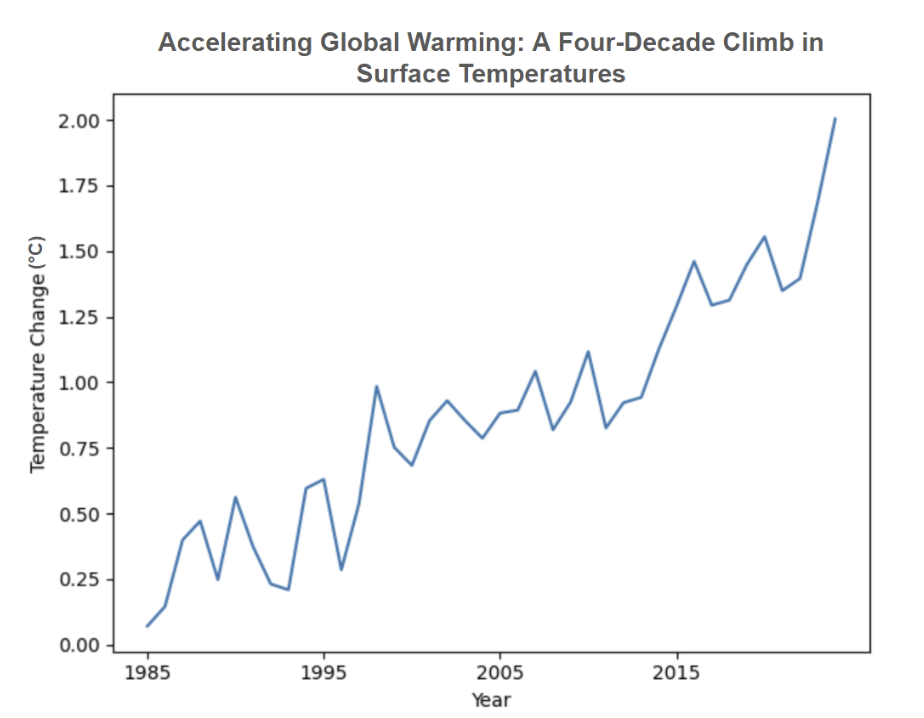
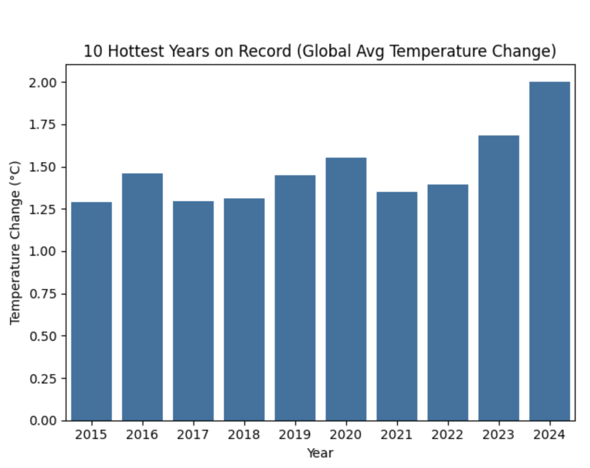

The narrative of an accelerating climate crisis is completely accurate; global warming is an urgently accelerating threat driven by a steep, continuous rise in global surface temperatures. (Note: Visualization 1 argues FOR this proposition by emphasizing the dramatic climb in temperatures, while Visualization 2 argues AGAINST this proposition by framing the warming as overstated and plateauing).


Reflection The most striking part of this process was how quickly the work of "designing for a side" stopped feeling like an exercise and started feeling like ordinary craft. Building Visualization 1 was straightforward in the technical sense — a line chart of annual temperature change is the kind of figure you would expect to see in a peer-reviewed paper — and yet many of the choices that made it persuasive were the same kinds of choices we labeled "deceptive" in Visualization 2: where to start the x-axis, how tightly to bound the y-axis, which slice of history to foreground. Truncating to 1985 made the climb feel relentless; tightening the y-axis to 0–2°C made the slope dramatic. Neither of those choices is a lie, but each one quietly closes off other readings of the same data. What surprised us was how thin the wall between "framing" and "distortion" turned out to be. By the time we got to Visualization 2 — cherry-picking the post-El Niño 2016–2022 window, fitting a linear trendline across only seven points, expanding the y-axis to 0–2.5°C to flatten the line, and titling the chart "Global Temperatures Have Plateaued Since 2016" — we were not really doing anything categorically different from what we had done in Visualization 1. We were doing more of it, in a direction the underlying data does not actually support. That experience reshaped how we now think about ethical analysis and visualization. Our working definition is no longer "show the data truthfully" because, as this project demonstrated, every chart is the product of choices that suppress some readings and amplify others; there is no view from nowhere. A more honest standard is something like fidelity to the question being asked: a visualization is ethical when its design choices are defensible given what the underlying data can and cannot support, and when a careful reader who reconstructed the analysis would arrive at a similar conclusion. By that standard, Visualization 1 is persuasive but defensible — the long-run cumulative warming signal is real, and starting in 1985 dramatizes a trend that holds across many other windows too. Visualization 2 fails this test: the "plateau" disappears the moment you add even one year on either side of the chosen window, and the linear trendline relies on a sample size that no statistician would accept. The line we would draw, then, is something like this: a persuasive choice is acceptable when the conclusion it pushes the reader toward survives outside the specific framing of the chart, and it crosses into misleading when the conclusion only exists because of the framing. Truncating an axis to emphasize a real trend is rhetoric; truncating an axis to manufacture a trend that vanishes under any other slice is deception. We want to be honest that this line is fuzzy in practice, and the project made us more sympathetic to journalists and analysts who have to make these calls under deadline pressure. But fuzziness is not the same as absence — and one productive habit we are taking from this assignment is to ask, of every chart we make going forward, whether the headline finding would still hold if we made three or four of the design choices differently. If the answer is no, we are probably the ones being persuaded by our own visualization.